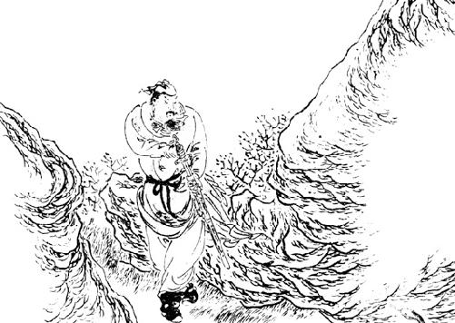
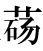
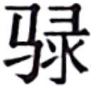
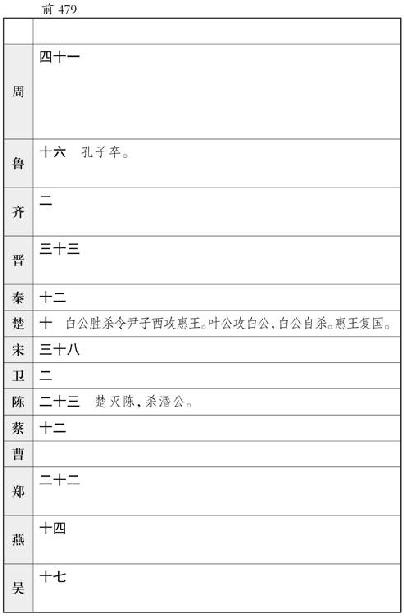
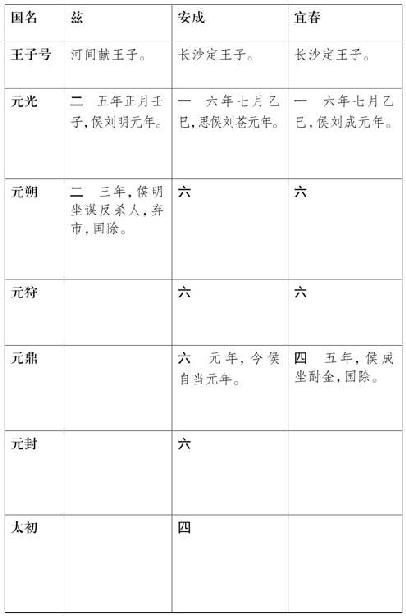
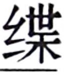

昔在颛顼 ，命南正重 以司天，北正黎 以司地。唐虞 之际，绍重黎 之后，使复典之，至于夏商 ，故重黎氏 世序天地。其在周 ，程伯休甫 其后也。当周宣王 时，失其守而为司马氏 。司马氏 世典周 史。惠襄 之间，司马氏 去周 适晋 。晋 中军随会 奔秦 ，而司马氏 入少梁 。
自司马氏 去周 适晋 ，分散，或在卫 ，或在赵 ，或在秦 。其在卫 者，相中山 。在赵 者，以传剑论显，蒯聩 其后也。在秦 者名错 ，与张仪 争论，于是惠王 使错 将伐蜀 ，遂拔，因而守之。错 孙靳 ，事武安君白起 。而少梁 更名曰夏阳 。靳 与武安君 阬赵长平 军，还而与之俱赐死杜邮 ，葬于华池 。靳 孙昌 ，昌 为秦 主铁官，当始皇 之时。蒯聩 玄孙卬 为武信君 将而徇朝歌 。诸侯之相王，王卬 于殷 。汉 之伐楚 ，卬 归汉 ，以其地为河内郡 。昌 生无泽 ，无泽 为汉 市长。无泽 生喜 ，喜 为五大夫，卒，皆葬高门 。喜 生谈 ，谈 为太史公。
太史公 学天官于唐都 ，受易 于杨何 ，习道论于黄子 。太史公 仕于建元元封 之间，愍学者之不达其意而师悖，乃论六家之要指曰：
易大传 ：“天下一致而百虑，同归而殊涂。”夫阴阳 、儒 、墨 、名 、法 、道德 ，此务为治者也，直所从言之异路，有省不省耳。尝窃观阴阳 之术，大祥而众忌讳，使人拘而多所畏；然其序四时之大顺，不可失也。儒者 博而寡要，劳而少功，是以其事难尽从；然其序君臣父子之礼，列夫妇长幼之别，不可易也。墨者 俭而难遵，是以其事不可遍循；然其强本节用，不可废也。法家 严而少恩；然其正君臣上下之分，不可改矣。名家 使人俭而善失真；然其正名实，不可不察也。道家 使人精神专一，动合无形，赡足万物。其为术也，因阴阳 之大顺，采儒墨 之善，撮名法 之要，与时迁移，应物变化，立俗施事，无所不宜，指约而易操，事少而功多。儒者 则不然。以为人主天下之仪表也，主倡而臣和，主先而臣随。如此则主劳而臣逸。至于大道之要，去健羡，绌聪明，释此而任术。夫神大用则竭，形大劳则敝。形神骚动，欲与天地长久， 非所闻也。
夫阴阳 四时、八位、十二度、二十四节各有教令，顺之者昌，逆之者不死则亡。未必然也，故曰“使人拘而多畏”。夫春生夏长，秋收冬藏，此天道之大经也，弗顺则无以为天下纲纪，故日“四时之大顺，不可失也”。
夫儒者 以六艺 为法。六艺 经传以千万数，累世不能通其学，当年不能究其礼，故曰“博而寡要，劳而少功”。若夫列君臣父子之礼，序夫妇长幼之别，虽百家弗能易也。
墨者 亦尚尧舜 道，言其德行曰：“堂高三尺，土阶三等，茅茨不剪，采椽不刮。食土簋，啜土刑，粝粱之食，藜藿之羹。夏日葛衣，冬日鹿裘。”其送死，桐棺三寸，举音不尽其哀。教丧礼，必以此为万民之率。使天下法若此，则尊卑无别也。夫世异时移，事业不必同，故曰“俭而难遵”。要曰强本节用，则人给家足之道也。此墨子 之所长，虽百家弗能废也。
法家 不别亲疏，不殊贵贱，一断于法，则亲亲尊尊之恩绝矣。可以行一时之计，而不可长用也，故曰“严而少恩”。若尊主卑臣，明分职不得相逾越，虽百家弗能改也。
名家 苛察缴绕，使人不得反其意，专决于名而失人情，故曰“使人俭而善失真”。若夫控名责实，参伍不失，此不可不察也。
道家
无为，又曰无不为，其实易行，其辞难知。其术以虚无为本，以因循为用。无成埶，无常形，故能究万物之情。不为物先，不为物后，故能为万物主。有法无法，因时为业；有度无度，因物与合。故曰“圣人不朽，时变是守。虚者道之常也，因者君之纲”也。群臣并至，使各自明也。其实中其声者谓之端，实不中其声者谓之窾。窾言不听，奸乃不生，贤不肖自分，白黑乃形。在所欲用耳，何事不成。乃合大道，混混冥冥。光燿天下，复反无名。凡人所生者神也，所托者形也。神大用则竭，形大劳则敝，形神离则死。死者不可复生，离者不可复反，故圣人重之。由是观之，神者生之本也，形者生之具也。不先定其神形，而曰“我有以治天下”，何由哉？
太史公 既掌天官，不治民。有子曰迁 。
迁 生龙门 ，耕牧河 山之阳。年十岁则诵古文。二十而南游江 、淮 ，上会稽 ，探禹穴 ，窥九疑 ，浮于沅 、湘 ；北涉汶 、泗 ，讲业齐 、鲁 之都，观孔子 之 遗风，乡射邹 、峄 ；厄困鄱 、薛 、彭城 ，过梁 、楚 以归。于是迁 仕为郎中，奉使西征巴 、蜀 以南，南略邛 、笮 、昆明 ，还报命。
是岁天子始建汉家 之封，而太史公 留滞周南 ，不得与从事，故发愤且卒。而子迁 适使反，见父于河洛 之间。太史公 执迁 手而泣曰：“余先周室 之太史也。自上世尝显功名于虞夏 ，典天官事。后世中衰，绝于予乎？汝复为太史，则续吾祖矣。今天子接千岁之统，封泰山 ，而余不得从行，是命也夫，命也夫！余死，汝必为太史；为太史，无忘吾所欲论著矣。且夫孝始于事亲，中于事君，终于立身。扬名于后世，以显父母，此孝之大者。夫天下称诵周公 ，言其能论歌文武 之德，宣周邵 之风，达太王王季 之思虑，爰及公刘 ，以尊后稷 也。幽厉 之后，王道缺，礼乐衰，孔子 修旧起废，论诗书 ，作春秋 ，则学者至今则之。自获麟以来四百有馀岁，而诸侯相兼，史记放绝。今汉 兴，海内一统，明主贤君忠臣死义之士，余为太史而弗论载，废天下之史文，余甚惧焉，汝其念哉！”迁 俯首流涕曰：“小子不敏，请悉论先人所次旧闻，弗敢阙。”
卒三岁而迁
为太史令，䌷史记石室金匮之书。五年而当太初
元年，十一月甲子朔旦冬至，天历始改，建于明堂，诸神受纪。
太史公 曰：“先人有言：‘自周公 卒五百岁而有孔子 。孔子 卒后至于今五百岁，有能绍明世，正易传 ，继春秋 ，本诗书礼乐 之际？’意在斯乎！意在斯乎！小子何敢让焉。”
上大夫壶遂 曰：“昔孔子 何为而作春秋 哉？”太史公 曰：“余闻董生 曰：‘周 道衰废，孔子 为鲁 司寇，诸侯害之，大夫壅之。孔子 知言之不用，道之不行也，是非二百四十二年之中，以为天下仪表，贬天子，退诸侯，讨大夫，以达王事而已矣。’子曰：‘我欲载之空言，不如见之于行事之深切著明也。’夫春秋 ，上明三王 之道，下辨人事之纪，别嫌疑，明是非，定犹豫，善善恶恶，贤贤贱不肖，存亡国，继绝世，补敝起废，王道之大者也。易 著天地阴阳四时五行，故长于变；礼 经纪人伦，故长于行；书 记先王之事，故长于政；诗 记山川谿谷禽兽草木牝牡雌雄，故长于风；乐 乐所以立，故长于和；春秋 辩是非，故长于治人。是故礼 以节人，乐 以发和，书 以道事，诗 以达意，易 以道化，春秋 以道义。拨乱世反之正，莫近于春秋 。春秋 文成数万，其指数千。万物之散聚皆在春秋 。春秋 之中，弑君三十六，亡国五十二，诸侯奔走不得保其社稷者不可胜数。察其所以，皆失其本已。故易 曰‘失之豪厘，差以千里’。故曰‘臣弑君，子弑父，非一旦一夕之故也，其渐久 矣’。故有国者不可以不知春秋 ，前有谗而弗见，后有贼而不知。为人臣者不可以不知春秋 ，守经事而不知其宜，遭变事而不知其权。为人君父而不通于春秋 之义者，必蒙首恶之名。为人臣子而不通于春秋 之义者，必陷篡弑之诛，死罪之名。其实皆以为善，为之不知其义，被之空言而不敢辞。夫不通礼义之旨，至于君不君，臣不臣，父不父，子不子。夫君不君则犯，臣不臣则诛，父不父则无道，子不子则不孝。此四行者，天下之大过也。以天下之大过予之，则受而弗敢辞。故春秋 者，礼义之大宗也。夫礼禁未然之前，法施已然之后；法之所为用者易见，而礼之所为禁者难知。”
壶遂 曰：“孔子 之时，上无明君，下不得任用，故作春秋 ，垂空文以断礼义，当一王之法。今夫子上遇明天子，下得守职，万事既具，咸各序其宜，夫子所论，欲以何明？”
太史公 曰：“唯唯，否否，不然。余闻之先人曰：‘伏羲 至纯厚，作易八卦 。尧舜 之盛，尚书 载之，礼乐作焉。汤武 之隆，诗人歌之。春秋 采善贬恶，推三代 之德，褒周室 ，非独刺讥而已也。’汉 兴以来，至明天子，获符瑞，封禅，改正朔，易服色，受命于穆清，泽流罔极，海外殊俗，重译款塞，请来献见者，不可胜道。臣下百官力诵圣德，犹不能宣尽其意。且士贤能而不用，有国者之耻，；主上明圣而德不布闻，有司之过也。且余尝掌其官，废明圣盛德不载，灭功臣世家贤大夫之业不述，堕先人所言，罪莫大焉。余所谓述故事，整齐其世传，非所谓作也，而君比之于春秋 ，谬矣。”
于是论次其文。七年而太史公 遭李陵 之祸，幽于缧绁。乃喟然而叹曰：“是余之罪也夫？是余之罪也夫！身毁不用矣。”退而深惟曰：“夫诗书 隐约者，欲遂其志之思也。昔西伯 拘羑里 ，演周易 ；孔子 厄陈蔡 ，作春秋 ；屈原 放逐，著离骚 ；左丘 失明，厥有国语 ；孙子 膑脚，而论兵法；不韦 迁蜀 ，世传吕览 ；韩非 囚秦 ，说难 、孤愤 ；诗 三百篇，大抵贤圣发愤之所为作也。此人皆意有所郁结，不得通其道也，故述往事，思来者。”于是卒述陶唐 以来，至于麟止，自黄帝 始。
维昔黄帝 ，法天则地，四圣遵序，各成法度；唐尧 逊位，虞舜 不台；厥美帝功，万世载之。作五帝本纪 第一。
维禹 之功，九州攸同，光唐虞 际，德流苗裔；夏桀 淫骄，乃放鸣条 。作夏本纪 第二。
维契 作商 ，爰及成汤 ；太甲 居桐 ，德盛阿衡；武丁 得说 ，乃称高宗 ；帝辛 湛湎，诸侯不享。作殷本纪 第三。
维弃 作稷，德盛西伯 ；武王牧野 ，实抚天下；幽厉 昏乱，既丧酆镐 ；陵迟 至赧 ，洛邑 不祀。作周本纪 第四。
维秦 之先，伯翳 佐禹 ；穆公 思义，悼豪 之旅；以人为殉，诗歌黄鸟 ；昭襄 业帝。作秦本纪 第五。
始皇 既立，并兼六国，销锋铸 ，维偃干革，尊号称帝，矜武任力；二世 受运，子婴 降虏。作始皇本纪 第六。
秦 失其道，豪桀并扰；项梁 业之，子羽 接之；杀庆 救赵 ，诸侯立之；诛婴 背怀 ，天下非之。作项羽本纪 第七。
子羽 暴虐，汉 行功德；愤发蜀汉 ，还定三秦 ；诛籍 业帝，天下惟宁，改制易俗。作高祖本纪 第八。
惠 之早 ，诸吕 不台；崇强禄 、产 ，诸侯谋之；杀隐 幽友 ，大臣洞疑，遂及宗祸。作吕太后本纪 第九。
汉 既初兴，继嗣不明，迎王践祚，天下归心；蠲除肉刑，开通关梁，广恩博施，厥称太宗 。作孝文本纪 第十。
诸侯骄恣，吴 首为乱，京师行诛，七国伏辜，天下翕然，大安殷富。作孝景本纪 第十一。
汉 兴五世，隆在建元 ，外攘夷狄，内修法度，封禅，改正朔，易服色。作今上本纪 第十二。
维三代 尚矣，年纪不可考，盖取之谱牒旧闻，本于兹，于是略推，作三代世表 第一。
幽厉 之后，周室 衰微，诸侯专政，春秋 有所不纪；而谱牒经略，五霸 更盛衰，欲睹周 世相先后之意，作十二诸侯年表 第二。
春秋 之后，陪臣秉政，强国相王；以至于秦 ，卒并诸夏 ，灭封地，擅其号。作六国年表 第三。
秦 既暴虐，楚 人发难，项氏 遂乱，汉 乃扶义征伐；八年之间，天下三嬗，事繁变众，故详著秦楚之际月表 第四。
汉 兴已来，至于太初 百年，诸侯废立分削，谱纪不明，有司靡踵，强弱之原云以世。作汉兴已来诸侯年表 第五。
维高祖 元功，辅臣股肱，剖符而爵，泽流苗裔，忘其昭穆，或杀身陨国。作高祖功臣侯者年表 第六。
惠景 之间，维申功臣宗属爵邑，作惠景间侯者年表 第七。
北讨强胡 ，南诛劲越 ，征伐夷蛮，武功爰列。作建元以来侯者年表 第八。
诸侯 既强，七国为从，子弟众多，无爵封邑，推恩行义，其势销弱，德归 京师。作王子侯者年表 第九。
国有贤相良将，民之师表也。维见汉 兴以来将相名臣年表，贤者记其治，不贤者彰其事。作汉兴以来将相名臣年表 第十。
维三代 之礼，所损益各殊务，然要以近性情，通王道，故礼因人质为之节文，略协古今之变。作礼书 第一。
乐者，所以移风易俗也。自雅颂 声兴，则已好郑卫 之音，郑卫 之音所从来久矣。人情之所感，远俗则怀。比乐书 以述来古，作乐书 第二。
非兵不强，非德不昌，黄帝 、汤 、武 以兴，桀 、纣 、二世 以崩，可不慎欤？司马法 所从来尚矣，太公 、孙 、吴 、王子 能绍而明之，切近世，极人变。作律书 第三。
律居阴而治阳，历居阳而治阴，律历更相治，间不容翲忽。五家之文怫异，维太初 之元论。作历书 第四。
星气之书，多杂机祥，不经；推其文，考其应，不殊。比集论其行事，验于轨度以次，作天官书 第五。
受命而王，封禅之符罕用，用则万灵罔不禋祀。追本诸神名山大川礼，作封禅书 第六。
维禹 浚川，九州攸宁；爰及宣防 ，决渎通沟。作河渠书 第七。
维币之行，以通农商；其极则玩巧，并兼兹殖，争于机利，去本趋末。作平准书 以观事变，第八。
太伯 避历 ，江 蛮是适；文武 攸兴，古公 王迹。阖庐 弑僚 ，宾服荆楚 ；夫差 克齐 ，子胥 鸱夷；信嚭 亲越 ，吴国 既灭。嘉伯 之让，作吴世家 第一。
申 、吕 肖矣，尚父 侧微，卒归西伯 ，文武 是师；功冠群公，缪权于幽；番番黄发，爰飨营丘 。不背柯 盟，桓公 以昌，九合诸侯，霸功显彰。田阚 争宠，姜姓 解亡。嘉父 之谋，作齐太公世家 第二。
依之违之，周公 绥之；愤发文德，天下和之；辅翼成王 ，诸侯宗周 。隐桓 之际，是独何哉？三桓 争强，鲁 乃不昌。嘉旦 金縢 ，作周公世家 第三。
武王 克纣 ，天下未协而崩。成王 既幼，管蔡 疑之，淮夷 叛之，于是召公 率德，安集王室，以宁东土。燕哙 之禅，乃成祸乱。嘉甘棠 之诗，作燕世家 第四。
管蔡 相武庚 ，将宁旧商 ；及旦 摄政，二叔不飨；杀鲜 放度 ，周公 为盟；大任 十子，周 以宗强。嘉仲 悔过，作管蔡世家 第五。
王后不绝，舜禹 是说；维德休明，苗裔蒙烈。百世享祀，爰周陈杞 ，楚 实灭之。齐田 既起，舜 何人哉？作陈杞世家 第六。
收殷 馀民，叔 封始邑，申以商 乱，酒材 是告，及朔 之生，卫顷 不宁；南子 恶蒯聩 ，子父易名。周 德卑微，战国既强，卫 以小弱，角 独后亡。嘉彼康诰 ，作卫世家 第七。
嗟箕子 乎！嗟箕子 乎！正言不用，乃反为奴。武庚 既死，周 封微子 。襄公 伤于泓 ，君子孰称。景公 谦德，荧惑 退行。剔成 暴虐，宋 乃灭亡。嘉微子 问太师，作宋世家 第八。
武王 既崩，叔虞 邑唐 。君子讥名，卒灭武公 。骊姬 之爱，乱者五世；重耳 不得意，乃能成霸。六卿专权，晋国 以秏。嘉文公 锡珪鬯，作晋世家 第九。
重黎 业之，吴回 接之；殷 之季世，粥子 牒之。周 用熊绎 ，熊渠 是续。庄王 之贤，乃复国陈 ；既赦郑伯 ，班师华元 。怀王 客死，兰 咎屈原 ；好谀信谗，楚 并于秦 。嘉庄王 之义，作楚世家 第十。
少康 之子，实宾南海 ，文身断发，鼋 与处，既守封禺 ，奉禹 之祀。句践 困彼，乃用種 、蠡 。嘉句践 夷蛮能修其德，灭强吴 以尊周室 ，作越王句践世家 第十一。
桓公 之东，太史是庸。及侵周 禾，王人是议。祭仲 要盟，郑 久不昌。子产 之仁，绍世称贤。三晋 侵伐，郑 纳于韩 。嘉厉公 纳惠王 ，作郑世家 第十二。
维骥 耳，乃章造父 。赵夙 事献 ，衰 续厥绪。佐文 尊王，卒为晋 辅。襄子 困辱，乃禽智伯 。主父 生缚，饿死探爵。王迁 辟淫，良将是斥。嘉鞅 讨周 乱，作赵世家 第十三。
毕万 爵魏 ，卜人知之，及绛 戮干 ，戎翟 和之。文侯 慕义，子夏 师之。惠王 自矜，齐秦 攻之。既疑信陵 ，诸侯罢之。卒亡大梁 ，王假 厮之。嘉武 佐晋文 申霸道，作魏世家 第十四。
韩厥 阴德，赵武 攸兴。绍绝立废，晋 人宗之。昭侯 显列，申子 庸之。疑非 不信，秦 人袭之。嘉厥 辅晋 匡周 天子之赋，作韩世家 第十五。
完子 避难，适齐 为援，阴施五世，齐 人歌之。成子 得政，田和 为侯。王建 动心，乃迁于共 。嘉威 、宣 能拨浊世而独宗周 ，作田敬仲完世家 第十六。
周室 既衰，诸侯恣行。仲尼 悼礼废乐崩，追修经术，以达王道，匡乱世反之于正，见其文辞，为天下制仪法，垂六艺 之统纪于后世。作孔子世家 第十七。
桀 、纣 失其道而汤 、武 作，周 失其道而春秋 作。秦 失其政，而陈涉 发迹。诸侯作难，风起云蒸，卒亡秦 族。天下之端，自涉 发难。作陈涉世家 第十八。
成皋 之台，薄氏 始基。诎意适代 ，厥崇诸窦 。栗姬  贵，王氏 乃遂。陈后 太骄，卒尊子夫 。嘉夫 德若斯，作外戚世家 第十九。
汉 既谲谋，禽信 于陈 ；越荆 剽轻，乃封弟交 为楚王 ，爰都彭城 ，以强淮泗 ，为汉 宗藩。戊 溺于邪，礼 复绍之。嘉游 辅祖，作楚元王世家 第二十。
维祖师旅，刘贾 是与；为布 所袭，丧其荆 、吴 。营陵 激吕 ，乃王琅邪 ；怵午 信齐 ，往而不归，遂西入关，遭立孝文 ，获复王燕 。天下未集，贾 、泽 以族，为汉 藩辅。作荆燕世家 第二十一。
天下已平，亲属既寡；悼惠 先壮，实镇东土。哀王 擅兴，发怒诸吕 ，驷钧 暴戾，京师弗许。厉 之内淫，祸成主父 。嘉肥 股肱，作齐悼惠王世家 第二十二。
楚 人围我荥阳 ，相守三年；萧何 填抚山西 ，推计踵兵，给粮食不绝，使百姓爱汉 ，不乐为楚 。作萧相国世家 第二十三。
与信 定魏 ，破赵 拔齐 ，遂弱楚 人。续何 相国，不变不革，黎庶攸宁。嘉参 不伐功矜能，作曹相国世家 第二十四。
运筹帷幄之中，制胜于无形，子房 计谋其事，无知名，无勇功，图难于易，为大于细。作留侯世家 第二十五。
六奇既用，诸侯宾从于汉 ；吕氏 之事，平 为本谋，终安宗庙，定社稷。作陈丞相世家 第二十六。
诸吕 为从，谋弱京师，而勃 反经合于权；吴楚 之兵，亚夫 驻于昌邑 ，以厄齐赵 ，而出委以梁 。作绛侯世家 第二十七。
七国叛逆，蕃屏京师，唯梁 为扞； 爱矜功，几获于祸。嘉其能距吴楚 ，作梁孝王世家 第二十八。
五宗既王，亲属洽和，诸侯大小为藩，爰得其宜，僭拟之事稍衰贬矣。作五宗世家 第二十九。
三子之王，文辞可观。作三王世家 第三十。
末世争利，维彼奔义；让国饿死，天下称之。作伯夷列传 第一。
晏子 俭矣，夷吾 则奢；齐桓以霸，景公 以治。作管晏列传 第二。
李耳 无为自化，清净自正；韩非 揣事情，循势理。作老子韩非列传 第三。
自古王者而有司马法 ，穰苴 能申明之。作司马穰苴列传 第四。
非信廉仁勇不能传兵论剑，与道同符，内可以治身，外可以应变，君子比德焉。作孙子吴起列传 第五。
维建 遇谗，爰及子奢 ，尚 既匡父，伍员 奔吴 。作伍子胥列传 第六。
孔氏 述文，弟子兴业，咸为师傅，崇仁厉义。作仲尼弟子列传 第七。
鞅 去卫 适秦 ，能明其术，强霸孝公 ，后世遵其法。作商君列传 第八。
天下患衡秦 毋餍，而苏子 能存诸侯，约从以抑贪强。作苏秦列传 第九。
六国既从亲，而张仪 能明其说，复散解诸侯。作张仪列传 第十。
秦 所以东攘雄诸侯，樗里 、甘茂 之策。作樗里甘茂列传 第十一。
苞河 山，围大梁 ，使诸侯敛手而事秦 者，魏冉 之功。作穰侯列传 第十二。
南拔鄢郢 ，北摧长平 ，遂围邯郸 ，武安 为率；破荆 灭赵 ，王翦 之计。作白起王翦列传 第十三。
猎儒墨 之遗文，明礼义之统纪，绝惠王 利端，列往世兴衰。作孟子荀卿列传 第十四。
好客喜士，士归于薛 ，为齐 扞楚魏 。作孟尝君列传 第十五。
争冯亭 以权，如楚 以救邯郸 之围，使其君复称于诸侯。作平原君虞卿列传 第十六。
能以富贵下贫贱，贤能诎于不肖，唯信陵君 为能行之。作魏公子列传 第十七。
以身徇君，遂脱强秦 ，使驰说之士南乡走楚 者，黄歇 之义。作春申君列传 第十八。
能忍 于魏齐 ，而信威于强秦 ，推贤让位，二子有之。作范睢蔡泽列传 第十九。
率行其谋，连五国兵，为弱燕 报强齐 之雠，雪其先君之耻。作乐毅列传 第二十。
能信意强秦 ，而屈体廉子 ，用徇其君，俱重于诸侯。作廉颇蔺相如列传 第二十一。
湣王 既失临淄 而奔莒 ，唯田单 用即墨 破走骑劫 ，遂存齐 社稷。作田单列传 第二十二。
能设诡说解患于围城，轻爵禄，乐肆志。作鲁仲连邹阳列传 第二十三。
作辞以讽谏，连类以争义，离骚 有之。作屈原贾生列传 第二十四。
结子楚 亲，使诸侯之士斐然争入事秦 。作吕不韦列传 第二十五。
曹子 匕首，鲁 获其田，齐 明其信；豫让 义不为二心。作刺客列传 第二 十六。
能明其画，因时推秦 ，遂得意于海内，斯 为谋首。作李斯列传 第二十七。
为秦 开地益众，北靡匈奴 ，据河 为塞，因山为固，建榆中 。作蒙恬列传 第二十八。
填赵 塞常山 以广河内 ，弱楚 权，明汉王 之信于天下。作张耳陈馀列传 第二十九。
收西河 、上党 之兵，从至彭城 ；越 之侵掠梁 地以苦项羽 。作魏豹彭越列传 第三十。
以淮南 叛楚 归汉 ，汉 用得大司马殷 ，卒破子羽 于垓下 。作黥布列传 第三十一。
楚 人迫我京索 ，而信 拔魏赵 ，定燕齐 ，使汉 三分天下有其二，以灭项籍 。作淮阴侯列传 第三十二。
楚汉 相距巩洛 ，而韩信 为填颍川 ，卢绾 绝籍 粮饷。作韩信卢绾列传 第三十三。
诸侯畔项王 ，唯齐 连子羽城阳 ，汉 得以间遂入彭城 。作田儋列传 第三十四。
攻城野战，获功归报，哙 、商 有力焉，非独鞭策，又与之脱难。作樊郦列传 第三十五。
汉 既初定，文理未明，苍 为主计，整齐度量，序律历。作张丞相列传 第三十六。
结言通使，约怀诸侯；诸侯咸亲，归汉 为藩辅。作郦生陆贾列传 第三十七。
欲详知秦楚 之事，维周 常从高祖 ，平定诸侯。作傅靳蒯成列传 第三十八。
徙强族，都关中 ，和约匈奴 ；明朝廷礼，次宗庙仪法。作刘敬叔孙通列传 第三十九。
能摧刚作柔，卒为列臣；栾公 不劫于埶而倍死。作季布栾布列传 第四十。
敢犯颜色以达主义，不顾其身，为国家树长画。作袁盎朝错列传 第四十一。
守法不失大理，言古贤人，增主之明。作张释之冯唐列传 第四十二。
敦厚慈孝，讷于言，敏于行，务在鞠躬，君子长者。作万石张叔列传 第 四十三。
守节切直，义足以言廉，行足以厉贤，任重权不可以非理挠。作田叔列传 第四十四。
扁鹊 言医，为方者宗，守数精明；后世循序，弗能易也，而仓公 可谓近之矣。作扁鹊仓公列传 第四十五。
维仲 之省，厥濞 王吴 ，遭汉 初定，以填抚江淮 之间。作吴王濞列传 第四十六。
吴楚 为乱，宗属唯婴 贤而喜士，士乡之，率师抗山东荥阳 。作魏其武安列传 第四十七。
智足以应近世之变，宽足用得人。作韩长孺列传 第四十八。
勇于当敌，仁爱士卒，号令不烦，师徒乡之。作李将军列传 第四十九。
自三代 以来，匈奴 常为中国患害；欲知强弱之时，设备征讨，作匈奴列传 第五十。
直曲塞，广河南 ，破祁连 ，通西国，靡北胡 。作卫将军骠骑列传 第五十一。
大臣宗室以侈靡相高，唯弘 用节衣食为百吏先。作平津侯列传 第五十二。
汉 既平中国，而佗 能集杨越 以保南藩，给贡职。作南越列传 第五十三。
吴 之叛逆，瓯 人斩濞 ，葆守封禺 为臣。作东越列传 第五十四。
燕丹 散乱辽 间，满 收其亡民，厥聚海东，以集真藩 ，葆塞为外臣。作朝鲜列传 第五十五。
唐蒙 使略通夜郎 ，而邛笮 之君请为内臣受吏。作西南夷列传 第五十六。
子虚 之事，大人 赋说，靡丽多夸，然其指风谏，归于无为。作司马相如列传 第五十七。
黥布 叛逆，子长 国之，以填江淮 之南，安剽楚 庶民。作淮南衡山列传 第五十八。
奉法循理之吏，不伐功矜能，百姓无称，亦无过行。作循吏列传 第五十九。
正衣冠立于朝廷，而群臣莫敢言浮说，长孺 矜焉；好荐人，称长者，壮 有溉。作汲郑列传 第六十。
自孔子 卒，京师莫崇庠序，唯建元元狩 之间，文辞粲如也。作儒林列 传 第六十一。
民倍本多巧，奸轨弄法，善人不能化，唯一切严削为能齐之。作酷吏列传 第六十二。
汉 既通使大夏 ，而西极远蛮，引领内乡，欲观中国。作大宛列传 第六十三。
救人于厄，振人不赡，仁者有乎；不既信，不倍言，义者有取焉。作游侠列传 第六十四。
夫事人君能说主耳目，和主颜色，而获亲近，非独色爱，能亦各有所长。作佞幸列传 第六十五。
不流世俗，不争势利，上下无所凝滞，人莫之害，以道之用。作滑稽列传 第六十六。
齐 、楚 、秦 、赵 为日者，各有俗所用。欲循观其大旨，作日者列传 第六十七。
三王 不同龟，四夷各异卜，然各以决吉凶。略窥其要，作龟策列传 第六十八。
布衣匹夫之人，不害于政，不妨百姓，取与以时而息财富，智者有采焉。作货殖列传 第六十九。
维我汉 继五帝 末流，接三代 绝业。周 道废，秦 拨去古文，焚灭诗书 ，故明堂石室金匮玉版图籍散乱。于是汉 兴，萧何 次律令，韩信 申军法，张苍 为章程，叔孙通 定礼仪，则文学彬彬稍进，诗书 往往间出矣。自曹参 荐盖公 言黄老 ，而贾生 、晁错 明申 、商 ，公孙弘 以儒 显，百年之间，天下遗文古事靡不毕集太史公 。太史公 仍父子相续纂其职。曰：“於戏！余维先人尝掌斯事，显于唐虞 ，至于周 ，复典之，故司马氏 世主天官。至于余乎，钦念哉！钦念哉！”罔罗天下放失旧闻，王迹所兴，原始察终，见盛观衰，论考之行事，略推三代 ，录秦汉 ，上记轩辕 ，下至于兹，著十二本纪，既科条之矣。并时异世，年差不明，作十表。礼乐损益，律历改易，兵权山川鬼神，天人之际，承敝通变，作八书。二十八宿环北辰 ，三十辐共一毂，运行无穷，辅拂股肱之臣配焉，忠信行道，以奉主上，作三十世家。扶义俶傥，不令己失时，立功名于天下，作七十列传。凡百三十篇，五十二万六千五百字，为太史公书 。序略，以拾遗补艺，成一家之言，厥协六经 异传，整齐百家杂语，藏之名山，副在京师，俟后世圣人君子。第七十。
太史公 曰：余述历黄帝 以来至太初 而讫，百三十篇。